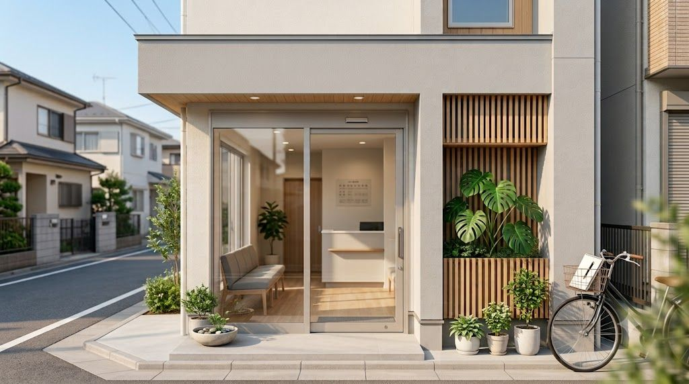

Features
当院の3つの特長
専門医による丁寧な診察
大学病院・総合病院で培った専門知識をもとに、一人ひとりの症状に向き合った丁寧な診察を心がけています。
土曜診療・Webで簡単予約
お忙しい方のために土曜午前も診療しています。Webからのご予約と当日受付の両方に対応しています。
長く通えるかかりつけ医
お一人おひとりの体質・生活習慣を把握し、症状の治療から予防まで長期的な健康管理をサポートします。
Doctor
医師紹介
院長
山田 一郎Ichiro Yamada, M.D.
- ○○大学医学部 卒業
- ○○大学附属病院 消化器内科 勤務
- ○○総合病院 消化器科 医長
- 20XX年 ひかり内科クリニック 開院
Specialties
診療内容
こんな症状・お悩みはご相談ください
発熱・風邪症状
咳・喉の痛み
腹痛・胃もたれ
下痢・便秘
高血圧・動悸
糖尿病・血糖値
肥満・生活習慣病
喘息・アレルギー
予防接種
健康診断
慢性疾患管理
セカンドオピニオン
Flow
受診の流れ
01
ご予約・来院
Webまたはお電話でご予約ください。お急ぎの場合は当日受付にも対応しています。受付時間内にお越しください。
02
受付・問診票記入
受付にて健康保険証をご提示ください。初めてご来院の方は問診票にご記入いただきます。
03
診察・検査
医師が丁寧に症状をお伺いします。必要に応じて血液検査・尿検査・X線などを行います。
04
お会計・処方箋
診察後、受付にてお会計をお願いします。処方箋は近隣の調剤薬局でお受け取りください。
Voice
患者様の声
「先生がとても親切で、症状をわかりやすく説明してくださいました。近くにこんなクリニックがあって安心です。」
40代 女性
内科（生活習慣病）
「土曜も診ていただけるので、平日仕事がある私にはとても助かります。Web予約も簡単で便利です。」
50代 男性
消化器科（胃もたれ）
「何年も通っています。慢性疾患の管理から風邪まで、何でも相談できる先生です。家族全員でお世話になっています。」
30代 女性
内科（定期健診）
Access
アクセス・診療時間
- クリニック名
- ひかり内科クリニック
- 住所
- 東京都○○市○○町 1-2-3 ○○ビル 1F
- 電話番号
- 03-0000-0000
- アクセス
- ○○線「○○駅」東口 徒歩5分
| 月 | 火 | 水 | 木 | 金 | 土 | 日祝 | |
|---|---|---|---|---|---|---|---|
| 午前 9:00–12:30 |
◯ | ◯ | ◯ | ◯ | ◯ | ◯ | × |
| 午後 15:00–18:30 |
◯ | ◯ | ◯ | × | ◯ | × | × |
※ 祝日は休診です。年末年始・夏季休暇は別途お知らせします。